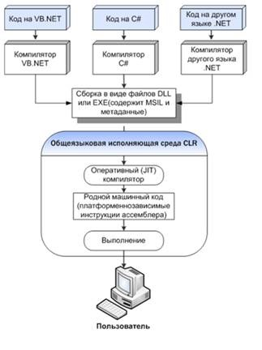

Этапы компиляции
Компиляция исходных текстов на Си в исполняемый файл происходит в три этапа.
Препроцессинг
Эту операцию осуществляет текстовый препроцессор.
Исходный текст частично обрабатывается — производятся:
- Замена комментариев пустыми строками
- Текстовое включение файлов —
#include - Макроподстановки —
#define - Обработка директив условной компиляции —
#if,#ifdef,#elif,#else,#endif
Компиляция
Процесс компиляции состоит из следующих этапов:
- Лексический анализ. Последовательность символов исходного файла преобразуется в последовательность лексем.
- Синтаксический анализ. Последовательность лексем преобразуется в дерево разбора.
- Семантический анализ. Дерево разбора обрабатывается с целью установления его семантики (смысла) — например, привязка идентификаторов к их декларациям, типам, проверка совместимости, определение типов выражений и т. д.
- Оптимизация. Выполняется удаление излишних конструкций и упрощение кода с сохранением его смысла.
- Генерация кода. Из промежуточного представления порождается объектный код.
Результатом компиляции является объектный код.
Объектный код — это программа на языке машинных кодов с частичным сохранением символьной информации, необходимой в процессе сборки.
При отладочной сборке возможно сохранение большого количества символьной информации (идентификаторов переменных, функций, а также типов).
Компоновка
Также называется связывание, сборка или линковка.
Это последний этап процесса получения исполняемого файла, состоящий из связывания воедино всех объектных файлов проекта.
При этом возможны ошибки связывания.
Если, допустим, функция была объявлена, но не определена, ошибка обнаружится только на этом этапе.
CLR, MSIL, управляемый код
Необходимо понимать, что при написании программы на C#, по
умолчанию программа компилируется в так называемый управляемый
код MSIL (промежуточный язык), который выполняется с помощью CLR
(общеязыковой средой выполнения). Это позволяет обеспечить
перенос программы с одной платформы на другую, а также
дополнительную защиту от ошибок и ряд других преимуществ.
Правда, с небольшой потерей в производительности.
Управляемый код – это код, который выполняется в CLR. В C# есть
возможность выйти за рамки управляемого кода, если важны
критерии производительности или есть другие потребности при
написании программы.
Схема компиляции .NET приложения
